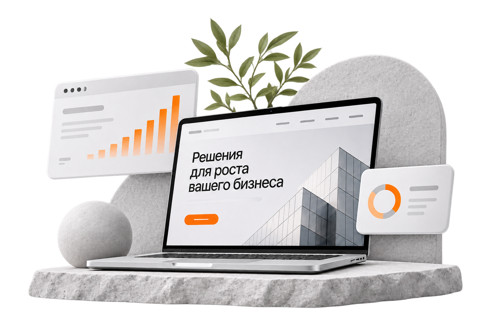

BY + RUработаем с бизнесом
в Беларуси и России
в Беларуси и России
SEO + Сайтинструменты для роста
и продаж
и продаж
Сайты для бизнеса,
которые помогают
продавать и расти
Разработка, SEO-продвижение и сопровождение для малого и среднего бизнеса. Лендинги, корпоративные сайты и интернет-магазины с понятной структурой, индивидуальным дизайном и ориентацией на результат.
О проекте
Это универсальное коммерческое предложение для компаний, которым нужен современный сайт как инструмент привлечения клиентов, укрепления доверия и роста продаж. Сайт помогает снизить зависимость от сторонних площадок и выстроить собственный цифровой канал продаж.
Индивидуальный
Базовое
SEO
Аналитика
и интеграции
Поддержка
и развитие
Что можно запустить
Что входит в разработку
Преимущества
Цена
Рациональный бюджет и понятный состав работ без лишних опций.
Индивидуальный
подход
Структура и визуальный стиль под задачи конкретного бизнеса.
Подход к разработке
Сайт создаётся как инструмент продаж, а не просто красивая страница.
Дальнейшее
сопровождение
После запуска можно продолжать развитие, SEO и поддержку.
Этапы работы
Процесс выстроен прозрачно: от обсуждения задач до запуска и дальнейшего развития проекта.
- Анализ
- Структура и прототип
- Дизайн
- Разработка
- Запуск
- Поддержка и SEO
Стоимость и условия
Лендингот 900 BYN*
Корпоративный сайтот 1 500 BYN*
Интернет-магазинот 2 000 BYN*
Ежемесячное сопровождениеот 400 BYN
ОплатаПредоплата или 50/50
- * Точная стоимость определяется после брифа, изучения задач проекта и согласования функционала.
- ** Сроки являются ориентировочными и зависят от объёма работ, согласований, предоставления материалов и правок.
Готовы обсудить ваш проект?
Помогу определить, какой формат сайта подойдёт вашему бизнесу,
что в него включить и с какого бюджета разумно стартовать.